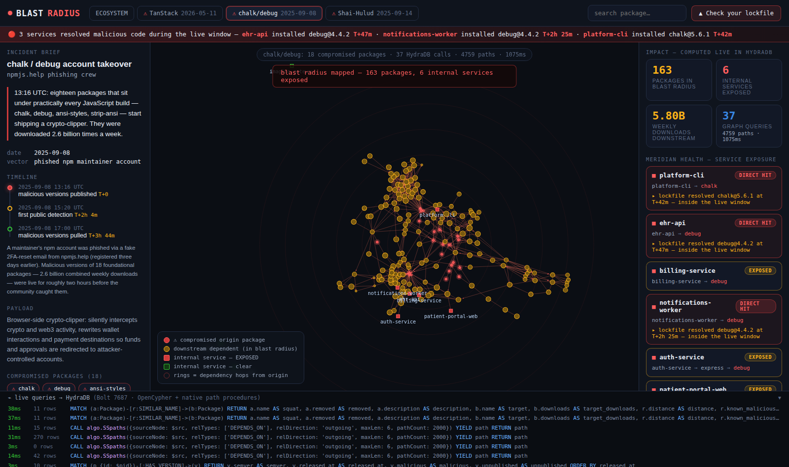

A package is compromised at 09:00.
Who's exposed by 09:06?
Six minutes is not a hypothetical — that is how long the TanStack worm took to publish 84 malicious artifacts across 42 packages through a compromised release pipeline.
Answering it means a transitive reverse-dependency closure over a versioned
ecosystem graph. A vector index cannot answer it at all: packages semantically near
chalk are not the packages that transitively depend on it —
and only the second set gets you breached.
Three real attacks — TanStack (CVE-2026-45321), chalk/debug, Shai-Hulud — loaded from public advisories, every source cited in the repo.
An incident console
on a live graph.
Pick an attack. A shockwave propagates outward through the real npm dependency graph, ring by ring, lighting up every downstream package and every internal service it reaches — while the panels fill in who got hit, when, and through which chain.
algo.SSpaths with relDirection:'incoming', whole paths returned
RESOLVED edges with timestamps, checked against each attack's publish window
MAINTAINS traversal: what else can that account push to?
package-lock.json in and it traverses your dependencies, in under a second

Every answer is
a graph traversal.
Nothing is precomputed at build time. The console streams the actual Cypher as it executes — this is the query behind the headline number:
Paths come back shortest-first under a global cap, so hop distance — the rings you see on screen — falls out of first-visit order for free.
HydraDB and the console run in one container inside a 512MB free tier — 105MB at boot. The graph reseeds itself on every cold start, so the deployment has no external database and no persistent disk.